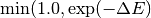

Usage examples¶
Perhaps the easiest way to get started with your own KMC modeling is to have a quick look at a few usage examples. We will take a look at three examples from the KMCLib functionality tests, one-dimensional diffusion, the two-dimensional spin Ising model and three-dimensional diffusion.
One-dimensional diffusion¶
We will here set-up and run a lattice KMC model of single particle Brownian motion in one dimension. We start with importing numpy and everything we need from KMCLib:
from KMCLib import *
import numpy
Lattice¶
We use a one-dimensional lattice periodic in the a-direction, with (10x1x1) repetitions of the primitive cell.
# An orthogonal unit cell with 5.2 Angstrom between lattice points in 'a'.
unit_cell = KMCUnitCell(cell_vectors=numpy.array([[5.2,0.0,0.0],
[0.0,1.0,0.0],
[0.0,0.0,1.0]]),
basis_points=[[0.0,0.0,0.0]])
# The lattice with periodicity in the 'a' direction.
lattice = KMCLattice(unit_cell=unit_cell,
repetitions=(10,1,1),
periodic=(True,False,False))
Initial configuration¶
The initial configuration is generated by combining the lattice with initial types. The length of the types list must exactly match the number of lattice points in the lattice.
# Initial types. Nine "A" and one "B" type particle.
types = ["A"]*10
types[5] = "B"
# Generate the configuration. With the lattice, types and possible types.
config = KMCConfiguration(lattice=lattice,
types=types,
possible_types=["A","B"])
Interactions¶
The interactions consists of two KMCProcess objects, one representing a move to the left and one a move to the right. For simulating Brownian motion the rate constant must be the same for both processes, corresponding to equal probability of moving to the left and to the right. The move_vectors parameter can be left out since it defaults to None, but we include it here for completeness.
# Setup a diffusion process to the left.
coordinates_p0 = [[0.0, 0.0, 0.0],[-1.0, 0.0, 0.0]]
p0 = KMCProcess(coordinates=coordinates_p0,
elements_before=["B","A"],
elements_after=["A","B"],
move_vectors=None,
basis_sites=[0],
rate_constant=1.5)
# Setup a diffusion process to the right.
coordinates_p1 = [[0.0, 0.0, 0.0],[1.0, 0.0, 0.0]]
p1 = KMCProcess(coordinates=coordinates_p1,
elements_before=["B","A"],
elements_after=["A","B"],
move_vectors=None,
basis_sites=[0],
rate_constant=1.5)
# Construct the interactions object.
interactions = KMCInteractions(processes=[p0, p1],
implicit_wildcards=True)
Construct the model¶
The lattice KMC model is generated by putting together the configuration and the interactions.
# Generate the KMC model to run.
model = KMCLatticeModel(configuration=config,
interactions=interactions)
Analysis¶
We want to study diffusion using mean square displacement analysis. This can conveniently be done on-the-fly during the simulation, by attaching an OnTheFlyMSD object to the simulation. We use 200 history steps, 100 bins and a maximum time-lag of 2500.0 time units. If the rate constants are given in Hz the time-lag should be given i seconds.
# Setup the mean square displacement analysis.
msd_analysis = OnTheFlyMSD(history_steps=200,
n_bins=100,
t_max=2500.0,
track_type="B")
The algorithm for the on-the-fly mean square displacement analysis in KMCLib is described in detail in [Ref.7].
Run¶
To run the model we need to specify the control parameters for the simulation by constructing a KMCControlParameters object with desired argument values. Giving seed=None is equivalent to not giving a seed value. If no seed is given the pseudo random number generator is seeded by the current time. For results to be exactly reproducible a specific seed value must be given. There is also the option here to choose which pseudo-random number generator to use. Not specifying any generator (as in this example) will give the default value, the Mersenne-Twister, as implemented in the C++11 standard library.
control_parameters = KMCControlParameters(number_of_steps=2500000,
dump_interval=10000,
analysis_interval=100,
seed=None)
The model is run by calling its run function with the control parameters. If a trajectory should be saved a file name must be specified with the trajectory_filename parameter. The analysis objects to attach to the simulation are given in the list specified with the analysis keyword. The analysis objects can be any of the built in analysis, or any user-defined analysis object inheriting from the KMCAnalysisPlugin class.
# Run the model.
model.run(control_parameters=control_parameters,
trajectory_filename="traj.py",
analysis=[msd_analysis])
Save the results to file¶
After the simulation has finished it can be convenient to save the results of the analysis to a file. All built-in analysis has a printResults() function that can be used to save results to a file. In this example we save the data to a file named save.data.
with open('save.data', 'w') as f:
msd_analysis.printResults(f)
Now you can plot the results with your favorite plotting tool. Plotting the MSD with error bars should look like this.

Resulting mean square displacement from the one-dimensional diffusion example. The data file is self explanatory. Column 1 holds the time-lag, column 2 holds the MSD in the x-direction and column 9 holds the estimated standard deviation in x.
An Ising spin model with custom rate calculator¶
One of the first KMC publications presented the method for studying Ising spin systems [Ref.2]. We will here look at an implementation of an Ising spin model similar to that of [Ref.2] using a custom rate calculator in KMCLib.
Initial configuration¶
We want to use a two-dimensional lattice with 10.000 (100x100) lattice sites, with half the sites occupied by “U” types and half by “D” type. To generate such an initial structure we use a simple script and store it in a file named generate_config.py.
from KMCLib import *
import numpy
# Define the unit cell.
cell_vectors = [[ 1.000000e+00, 0.000000e+00, 0.000000e+00],
[ 0.000000e+00, 1.000000e+00, 0.000000e+00],
[ 0.000000e+00, 0.000000e+00, 1.000000e+00]]
basis_points = [[ 0.000000e+00, 0.000000e+00, 0.000000e+00]]
unit_cell = KMCUnitCell(cell_vectors=cell_vectors,
basis_points=basis_points)
# Define the lattice.
lattice = KMCLattice(unit_cell=unit_cell,
repetitions=(100,100,1),
periodic=(True, True, False))
# Generate the initial types.
types = ['U']*10000
for i in range(5000):
# find a site which is not yet occupied by a "D" type.
pos = int(numpy.random.rand()*10000)
while (types[pos] == "D"):
pos = int(numpy.random.rand()*10000)
# Set the type.
types[pos] = "D"
# Setup the configuration.
configuration = KMCConfiguration(lattice=lattice,
types=types,
possible_types=["U","D"])
# Use the _script() function to get a script that can generate the configuration.
print "from KMCLib import *"
print configuration._script()
We run the above script and save the output in a file named config.py.
python generate_config.py > config.py
Storing the initial configuration in a separate script is not necessary here, but we do it to later demonstrate the convenient ability to read in a configuration from a script.
Interactions¶
We will implement the Ising spin model using a custom rate calculator to describe the interactions. But all elementary processes, i.e. what can happen in the simulation, must still be described using the KMCProcess class. If we take care of the specific rates using a custom rate calculator we can set all rate constants to 1.0 here. They will be modified later.
There are two elementary processes in the system, flipping of “D” to “U” and flipping of “U” to “D”. We store this script in a file called interactions.py. Again, this is not strictly necessary, but a way to demonstrate the feature to load also the interactions from a script.
from KMCLib import *
coordinates = [[ 0.000000e+00, 0.000000e+00, 0.000000e+00]]
# Flip 'U' to 'D'.
process_0 = KMCProcess(coordinates=coordinates,
elements_before=['U'],
elements_after=['D'],
basis_sites=[0],
rate_constant=1.0)
# Flip 'D' to 'U'.
process_1 = KMCProcess(coordinates=coordinates,
elements_before=['D'],
elements_after=['U'],
basis_sites=[0],
rate_constant=1.0)
# Create the interactions object.
interactions = KMCInteractions(processes=[process_0, process_1],
implicit_wildcards=True)
Custom rate calculator¶
The Hamiltonian of the Ising spin system we want to implement relates the energy of a spin configuration at a site with the spin of neighboring sites. The energy difference of flipping a “U” site to “D” is given by the number of “U” neighbors minus the number of “D” neighbors, while the opposite holds for the “D” to “U” flip. In accordance with [Ref.2] the rate associated with a flip is given by

Where  is the flipping energy in units of
is the flipping energy in units of  .
.
Our custom rate calculator must inherit from the KMCRateCalculatorPlugin class. We also have to overload the rate method with our own custom function for the rate criterion. Finally we want to overload the cutoff function of the base class to make sure we are looking at the first shell of nearest neighbors.
from KMCLib import *
import numpy
class CustomRateCalculator(KMCRateCalculatorPlugin):
""" Class for defining the custom rates function for the KMCLib paper. """
def rate(self, geometry, elements_before, elements_after, rate_constant, process_number, coordinate):
""" Overloaded base class API function """
diff = 1.0
# Get the number of U and D neighbours.
u_neighbours = len([ e for e in [elements_before[1], elements_before[2], elements_before[3], elements_before[4]] if e == "U"])
d_neighbours = len([ e for e in [elements_before[1], elements_before[2], elements_before[3], elements_before[4]] if e == "D"])
# Flipping U->D
if process_number == 0:
# D neighbours count as negative, U neighbours as positive.
diff = u_neighbours - d_neighbours
# Flipping D->U
if process_number == 1:
# U neighbours count as negative, D neighbours as positive.
diff = d_neighbours - u_neighbours
J = 1.0
kbT = 1.0
return min(1.0, numpy.exp(-diff*J/kbT))
def cutoff(self):
""" Determines the cutoff for this custom model """
return 1.0
Generate the model¶
We can now put our model together. Start by importing what we need from KMCLib.
from KMCLib import *
We can now load the configuration from the config.py file we have saved, and we load the interactions from interactions.py.
# Load the configuration and interactions.
configuration = KMCConfigurationFromScript("config.py")
interactions = KMCInteractionsFromScript("interactions.py")
The interactions must be updated with our custom rate calculator. We do this either by defining the custom rate calculator class directly in our script, or by defining it in another script and loading it like a Python module. Adding the custom rate calculator to the interactions object is done using its setRateCalculator method.
# Set the rate calculator.
interactions.setRateCalculator(rate_calculator=CustomRateCalculator)
We finally put the model together by combining the configuration and the interactions.
# Create the model.
model = KMCLatticeModel(configuration, interactions)
Run the model¶
To run the model we use the KMCControlParameters class to define the parameters and we run the model with a specified trajectory name to investigate later.
# Define the parameters.
control_parameters = KMCControlParameters(number_of_steps=1000000,
dump_interval=10000)
# Run the simulation - save trajectory to 'ising_traj.py'
model.run(control_parameters, trajectory_filename="ising_traj.py")
We finally save the whole model in a script named model.py and execute it with python.
python model.py
Check the results¶
The Ising model we have implemented is below the critical temperature. Visualizing the structure along the trajectory should, since we started from a random configuration, show a transition from random to fully ordered spins. This figures illustrates the expected behavior. Note that the exact details of the figure depends on the seed value given to the pseudo random number generator. In this example no seed was explicitly given and the default of taking the current time as seed was therefore used. Due to the stochastic nature of the algorithm and the simulated process the exact images as shown below can differ significantly from the once shown here for different seed values, however the trend in going from a disordered to an ordered structure should be the same.

Snapshots from the Ising model KMC simulation. Since the temperature is below the critical point we observe the transition from the initially random to almost completely ordered spins.
A note on performance¶
The Ising model above was implemented using the custom rate calculator. But the number of possible interactions in this system is limited to 32 unique processes. It is therefor not too hard to implement the model using fixed rate processes instead. i.e., with no custom rate calculator to modify the rates during the simulation. Running this Ising model for 1000000 steps with custom rates takes close to four minutes on my laptop. Running a completely equivalent model implemented using fixed rates only takes a minute. Since the fixed rates implementation never have to go out to Python during the rate evaluation it outperforms the custom rates implementation in this case. If the interaction range would be larger the number of fixed rate processes to include would grow and at some point the custom rate implementation would be both faster and easier to implement. Any model that doesn’t change during the simulation can theoretically be implemented using processes with fixed rates, but using the custom rate calculator provides a much simpler solution in many cases.
Three-dimensional diffusion¶
We will finally demonstrate how you can use KMCLib to setup and run a KMC model of a 3D bulk diffusion system. The example we show here is similar to the system used for timing in [Ref.8], and is taken from the functionality tests.
Initial configuration¶
We create an initial configuration of a fluorite structured metal oxide, with oxygen atoms, metal atoms, dopant atoms, vacancies in the oxygen sub-lattice and empty metal sites. We will only simulate diffusion on the oxygen sub-lattice and for convenience we chose to work with the primitive cell of the oxygen sub-lattice which causes half of the metal sites to be empty. Set up the lattice. We set the periodicity to False in the x-direction to produce a more interesting MSD curve to analyze later.
# Unit cell
cell_vectors = [[ 2.782000e+00, 0.000000e+00, 0.000000e+00],
[ 0.000000e+00, 2.782000e+00, 0.000000e+00],
[ 0.000000e+00, 0.000000e+00, 2.782000e+00]]
basis_points = [[ 0.000000e+00, 0.000000e+00, 0.000000e+00],
[ 5.000000e-01, 5.000000e-01, 5.000000e-01]]
unit_cell = KMCUnitCell(
cell_vectors=cell_vectors,
basis_points=basis_points)
# Lattice
lattice = KMCLattice(
unit_cell=unit_cell,
repetitions=(20,20,20),
periodic=(False, True, True))
Populate the lattice with oxygen "O" or vacancy "V" atoms in all (0,0,0) positions, and fill half the (0.5, 0.5, 0.5) sites with metal "M" and half with empty "E" sites.
# Loop over all cells, add the oxygen and metal positions.
size = 20
types = []
for i in range(size):
for j in range(size):
for k in range(size):
if k%2 == 0:
if (i+j)%2 == 0:
types += ["O","M"]
else:
types += ["O","E"]
else:
if (i+j+1)%2 == 0:
types += ["O","M"]
else:
types += ["O","E"]
We now add vacancies in the oxygen sub-lattice, and dopants in the metal sites.
# Add 3200 randomly positioned vacancies in the oxygen sub-lattice.
n_vacancies = 3200
defects = 0
while (defects < n_vacancies ):
position = int(numpy.random.uniform(0.0,1.0)*len(types))
# Make sure to replace oxygen sites.
while (types[position] != "O"):
position = int(numpy.random.uniform(0.0,1.0)*len(types))
# Replace with a vacancy.
types[position] = "V"
defects += 1
# Add 1600 dopants in the metal sites.
n_dopants = 1600
dopants = 0
while (dopants < n_dopants ):
position = int(numpy.random.uniform(0.0,1.0)*len(types))
# Make sure to replace metal sites.
while (types[position] != "M"):
position = int(numpy.random.uniform(0.0,1.0)*len(types))
# Replace with a dopant.
types[position] = "D"
dopants += 1
Put the lattice and types together to generate the initial configuration.
config = KMCConfiguration(lattice=lattice,
types=types,
possible_types=["E","M","D","O","V"])
Interactions¶
A realistic simulation of this kind of complex 3D system typically includes many interactions and is often best described using a custom rate calculator. To make this example simple we will only have six processes, corresponding to an oxygen-vacancy jump in the positive and negative direction of the Cartesian directions.
# Oxygen - Vacancy jump.
elements_before = ['V', 'O']
elements_after = ['O', 'V']
# Only on Oxygen sites.
basis_sites = [0]
# Flow down in z.
rate_constant_up = 0.9
rate_constant_down = 1.1
# All other rates.
rate_constant = 1.0
# Fill the list of processes.
processes = []
# Right.
coordinates = [[ 0.000000e+00, 0.000000e+00, 0.000000e+00],
[ 1.000000e+00, 0.000000e+00, 0.000000e+00]]
processes.append( KMCProcess(coordinates=coordinates,
elements_before=elements_before,
elements_after=elements_after,
basis_sites=basis_sites,
rate_constant=rate_constant) )
# Left.
coordinates = [[ 0.000000e+00, 0.000000e+00, 0.000000e+00],
[ -1.000000e+00, 0.000000e+00, 0.000000e+00]]
processes.append( KMCProcess(coordinates=coordinates,
elements_before=elements_before,
elements_after=elements_after,
basis_sites=basis_sites,
rate_constant=rate_constant) )
# Forward.
coordinates = [[ 0.000000e+00, 0.000000e+00, 0.000000e+00],
[ 0.000000e+00, 1.000000e+00, 0.000000e+00]]
processes.append( KMCProcess(coordinates=coordinates,
elements_before=elements_before,
elements_after=elements_after,
basis_sites=basis_sites,
rate_constant=rate_constant) )
# Back.
coordinates = [[ 0.000000e+00, 0.000000e+00, 0.000000e+00],
[ 0.000000e+00, -1.000000e+00, 0.000000e+00]]
processes.append( KMCProcess(coordinates=coordinates,
elements_before=elements_before,
elements_after=elements_after,
basis_sites=basis_sites,
rate_constant=rate_constant) )
# Up.
coordinates = [[ 0.000000e+00, 0.000000e+00, 0.000000e+00],
[ 0.000000e+00, 0.000000e+00, 1.000000e+00]]
processes.append( KMCProcess(coordinates=coordinates,
elements_before=elements_before,
elements_after=elements_after,
basis_sites=basis_sites,
rate_constant=rate_constant_up) )
# Down.
coordinates = [[ 0.000000e+00, 0.000000e+00, 0.000000e+00],
[ 0.000000e+00, 0.000000e+00, -1.000000e+00]]
processes.append( KMCProcess(coordinates=coordinates,
elements_before=elements_before,
elements_after=elements_after,
basis_sites=basis_sites,
rate_constant=rate_constant_down) )
# The final interactions object.
interactions = KMCInteractions(
processes=processes,
implicit_wildcards=True)
We have used different rate constants in the positive and negative z-directions to create a flow of diffusing particles along z. We do this to despite the simplicity of this toy model show different diffusion behavior in x, y and z.
Run with MSD analysis¶
Setup the MSD analysis to track vacancy diffusion.
msd_analysis = OnTheFlyMSD(history_steps=200,
n_bins=100,
t_max=100.0,
track_type="V")
Create and run the model.
# Run the model.
model = KMCLatticeModel(configuration, interactions)
model.run(control_parameters,
trajectory_filename="traj.py",
analysis=[msd_analysis])
# Save the analysis data to a file.
with open('msd.data', 'w') as f:
msd_analysis.printResults(f)
The file msd.data now contains the MSD data of the simulation. Plotting the MSD with errors in the x, y and z directions separately shows the expected behavior with confined motion in x (since we didn’t use periodicity in x), Brownian motion in y, and flow in the z direction.

Mean square displacement (MSD) curves with estimated errors for the 3D diffusion model. The MSD in the x direction indicates confined dynamics, caused by not using periodic boundary condition in the x direction. The MSD in the y direction is linear indicating Brownian motion, caused by equal rates in the positive and negative directions and a sufficiently low concentration of diffusing particles. The MSD in the z direction grows quadratically indicative of motion with flow, caused by using asymmetric rate constants in the positive and negative directions.